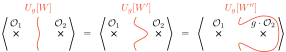
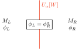

2 Topological Operators for Classical Symmetry
\[ \DeclareMathOperator{\vol}{vol} \DeclareMathOperator{\U}{U} \DeclareMathOperator{\SU}{SU} \DeclareMathOperator{\imunit}{i} \DeclareMathOperator{\id}{id} \DeclareMathOperator{\Map}{Map} \newcommand{\stdim}{D} \]
In this section we take the classical symmetry in scalar field theory as an example to study topological operators.
2.1 Set Up
To be concrete, let us consider the complex scalar field theory whose Lagrangian (density) on a spacetime of dimension \(\stdim\) is given by \[ \begin{aligned} \mathcal{L}(\phi) &= - \left(\frac12 \partial_\mu \phi(x)^* \partial^\nu \phi(x) + V(\phi(x))\right)\vol\\ &= \frac{1}{2} \mathop{d\phi} \wedge *\mathop{d\phi} - V(\phi(x))\vol, \end{aligned} \] where \(\mathop{*}\) is the Hodge star, \(\vol = \mathop{*} 1 = \prod_{i=1}^{\stdim} \mathop{dx_i}\) is the volume form for the flat space, and \(V(\phi)\) is the potential. The action is the integral over the spacetime \(M\) (without boundary): \[ S[\phi] = \int_{M}\mathcal{L}(\phi). \]
We consider a symmetry transformation of the scalar field \[ \phi(x) \mapsto \phi^g(x) \tag{2.1}\] parametrized by a group element \(g\) (constant over \(M\)) that leaves the action invariant: \[ S[\phi]=S[\phi^g]. \tag{2.2}\] This means that the Lagrangian is invariant up to a total derivative: \[ \mathcal{L}(\phi^g) = \mathcal{L}(\phi) + \mathop{ds}(\phi,g) \tag{2.3}\] where \(s(\phi,g)\) is a \((\stdim-1)\)-form on \(M\) depending on the constant \(g\) and the field \(\phi\). We set \(s(\phi,g=\id) = 0\), where \(\id\) is the unit of the symmetry group. Then, by \(\phi = (\phi^g)^{g^{-1}}\), we can set that \(s(\phi,g) = - s(\phi,g^{-1})\).
For example, the usual \(\U(1)\) rotation corresponds to the transformation \[ \phi^g(x) = \mathop{g} \phi(x), \] where \(g=e^{\imunit \alpha}\) is a \(\U(1)\) phase. The potential \(V(\phi)\) might partially break the \(\U(1)\) rotation into its subgroup \(\mathbb{Z}_k\), e.g. \(V(\phi)\propto \phi^k+(\phi^*)^k\). In such a case the parameter \(g\) takes discrete values: \(g = e^{\imunit \frac{2\pi i}{k}}\), \(i= 0 \cdots k-1\).
In addition, when \(V(\phi)=0\), the action \(S[\phi]\) also admit the shift symmetry1 \[ \phi^{\alpha}(x) = \phi(x) + \alpha. \]
In this section, we would like to construct the topological operator corresponding to these classical symmetry.
The construction will apply to other types of scalar field theory, e.g. real and/or multiple scalar fieldsas long as the kinetic term is standard enough (more on this in Section 2.3). For non-linear sigma model with topologically non-trivial target, the Lagrange multiplier \(\lambda\) below should take values in the correct set. We will consider the case with \(S^1\) target (compact boson) in Chapter 3. Also, the spacetime manifold \(M\) and the metric on it do not have to be flat. The signature of the metric is also insignificant in this lecture, although we use the Euclidean notation.
In this lecture we directly construct the topological operators corresponding to the finite transformation Equation 2.1, rather than the conventional approach considerting infinitesimal transformation. This will enable us to explicitly talk about finite symmetries (and their anomalies) in terms of topological operators, and also motivate us to consider generalized symmetries.
2.2 Construction of Topological Operator
As a basic example of Equation 1.3, we would like to construct the topological operator \(U_\alpha[W]\) corresponding to the transformation Equation 2.1. The topological operator \(U_\alpha[W]\) ,defined with respect to a codimension-1 submanifold \(W\) of the spacetime \(M\), should satisfy the following properties:
- Topological: \(U_g[W] = U_g[W']\) is \(W\) can be continuously defomed into \(W'\) without crossing other operators.
- Symmetry action: when a deformation from \(W\) to \(W''\) crosses an local operator \(\mathcal{O}\), it gets the symmetry action specified by \(g\), resulting in another operator \(\mathcal{O}^g\).
- Noether: when the symmetry group is continuous, we can take the group element to be the infinitsimal deformation of \(\id\): \(g = \id + \alpha + \mathcal{O}(\alpha^2)\). Then, the operator \(U_g[W]\) is approximated by the Noether charge \[ U_{1+\alpha+\mathcal{O}(\alpha^2)} = 1 + \alpha \int_W \mathop{*}j +\mathcal{O}(\alpha^2), \tag{2.4}\] where \(j = j_\mu\mathop{dx^\mu}\) is the Nother current one-form FIXME:sign is uncertain.. \[ \mathop{*}j = \left.\frac{\delta\mathcal{L}(\phi^{1+\alpha(x)})}{\delta d\alpha}\right|_{\alpha=0} + \left.\frac{\partial s(\phi, 1+ \alpha)}{\partial \alpha}\right|_{\alpha=0}. \] Note that when \(W\) is a time-slice \(W=\{t=0\}\), \[ \int_W \mathop{*} j = \int_{\{t=0\}} j^0 \mathop{d^{\stdim-1}x} \] is exactly the Noether charge written in any QFT textbook.
The properties 1. and 2. are summarized in Figure 2.1.

The idea of the construction is “cutting-and-gluing-with-twist”. That is, we first divide the spacetime \(M\) into two parts: \(M_\stdim = M_L \cup_W M_R\) with shared boundary \(W\) (see Figure 2.2. We take the orientation of \(W\) so that \(\partial M_L = -\partial M_R = W\). ). We also separate the scalar field \(\phi\) into two sets of fields: \(\phi_L(x)\) for \(x \in M_L\) and \(\phi_R(x)\) for \(x \in M_R\). Then, we glue the two regions and fields on those back together, with the twisted identification: \[ \phi_L|_W = \phi_R^{g^{-1}}|_W. \]

In path-integral, this construction can be implemented as follows:
\[ \begin{multlined} \langle U_g[W] \cdots \rangle = \int \mathop{\mathcal{D}^{M_L}\phi_L} \mathop{\mathcal{D}^{M_R}\phi_R} \mathop{\mathcal{D}^W\lambda} \cdots\\ \times \exp\left(-S_L[\phi_L]-S_R[\phi_R] - G_W[\lambda,\phi_L,\phi_R,g]\right) \end{multlined} \tag{2.5}\]
Here, \(\mathcal{D}^{X}\) denotes the measure for path-integral for a field defined on a submanifold \(X\) of the spacetime \(M\), and \(S_{L,R} = \int_{M_{L,R}}\mathcal{L}(\phi_{L,R})\) are actions on the submanifold \(M_{L,R}\), and “\(\cdots\)” represents additional insertions of operators. In addition, the “gluing” action \(G_W\) on the submanifold \(W\) is \[ \begin{multlined} G_W[\lambda,\phi_L,\phi_R,g] = - \imunit \int_W \lambda(\phi_L - \phi_R^{g^{-1}})\vol_W+\int_W s(\phi_M,g). \end{multlined} \tag{2.6}\] The heart of the above expression is that integrating the Lagrange multiplier \(\lambda\) out gives the “delta functional”: \[ \ \int \mathop{\mathcal{D}^W\lambda} \exp\left(\imunit \int_W \lambda (\phi_L-\phi^{g^{-1}}_R)\vol_W\right) = \prod_{x\in W}\delta(\phi_L(x) - \phi_R^{g^{-1}}(x)), \tag{2.7}\] which should implement Figure 2.2. Before studying the operator \(U_g[W]\), we should study the trivial case where the symmetry transformation \(g\) is the identity map \(g=\id\).
2.3 Identity Wall
When \(g=\id\), the operator \(U_{g=\id}[W]\) should be trivial. That is, we have \[ \langle \id[W] \cdots \rangle = \langle \cdots \rangle. \tag{2.8}\] We call the codimension-1 operator \(\id[W]\) with this property identity wall. It can also be called transparent wall or like that. Expanding Equation 2.8, the following equation should hold: \[ \begin{multlined} \int \mathop{\mathcal{D}^M\phi} \exp(-S) \cdots= \int \mathop{\mathcal{D}^{M_L}\phi_L} \mathop{\mathcal{D}^{M_R}\phi_R} \mathop{\mathcal{D}^W\lambda} \\ \times \exp\left(-S_L-S_R+\imunit \int_W \lambda(\phi_L - \phi_R)\vol_W\right)\cdots.\\ \end{multlined} \tag{2.9}\]
The point is that the difference between giving a field \(\phi\) and giving a pair of fields \((\phi_L,\phi_R)\) is that the latter is not constrained to be continuous across \(W\). On the right-hand side it is rather enforced by integrating out \(\lambda\) because of Equation 2.7.
Here we assumed that the path integral \(\int\mathcal{D}^M\phi\) should be over the continuous fields. The reason for this is that the standard kinetic term would diverge in the limit where the filed \(\phi\) becomes discontinuous.
This assumption, however, does not apply to QFTs with higher-derivative kinetic terms. Examples of such exotic QFTs (without relativistic symmetry) includes tensor gauge theories (see e.g. (Pretko et al. 2020; Seiberg and Shao 2021)). In these theories a field can be discontinuous, but some of higher derivatives are constrained to scale correctly with respect to the ratio of the lattice size and the system size. In such cases the construction of the trivial operator should differ. KO does not know how to describe it because of the UV/IR mixing and totally confused.
These QFTs describes what is called the fracton phases of matter, which does not have emergent continuous rotational symmetry in the IR. And the models typically posses subsytemsymmetries, whose corresponding operator is not totally topological. Existence of the new kind of symmetry lacked in standard relativistic systems would be related to the fact that the identy wall looks different from the first place.
It is instructive to study the equation of motions (EOMs) on the right hand side of Equation 2.9. The EOM with respect to \(\lambda\) simply states \(\phi_L(x) = \phi_R(x)\) for \(x\in W\). The surface term of Euler-Lagrange equation for \(\phi_L\) and \(\phi_R\) gives \[ \left.\frac{\delta \mathcal{L}[\phi_L]}{\delta \mathop{d\phi_L}}\right|_W = \lambda \vol_W = \left. \frac{\delta \mathcal{L}[\phi_R]}{\delta \mathop{d \phi_R}}\right|_W. \] If \(W\) is spacelike, or we regard the direction perpendicular to \(W\) as the imaginary time in Euclidean signature, this enforces that the canonical momentum also be continuous across \(W\).
Equation 2.9 expresses the locality of the path-integral. We can use the same procedure to decompose the path-integral \(\int \mathcal{D}^M{\phi}\) on \(M\) into path-integrals on local patches like \(\int \prod_i\mathcal{D}^{V_i}\phi_i\) (comes with many Lagrange multipliers). Here \(\bigcup_i V_i =M\) and \(V_i \cap V_j\) has codimension 1 in \(M\) if not empty.
Indeed, in the context of topological quantum field theory (TQFT), a similar cutting-and-gluing axiom is hired by the Atiyah-Segal formulation of topological quantum field theory and later Lurie’s cobordism hypothesis (Lurie 2008) established the relation between it and the locality.
Although in this lecture we satisfy ourselves with the formal non-rigorous treatment of path-integrals, deeper understanding of locality in non-topological QFT is strongly desired, and there are some promising results e.g. in (Grady and Pavlov 2020).
Because we do not plan to talk about fermion in this lecture, we comment on what will differ in the case of fermions.
In the scalar field theory, we impose the continuity of the “position” variables (in analytical-mechanical sense) \(\phi\), then the continuity of the momentum variables follows by EOM.
In a chiral fermion theory, as its kinetic term involves only one derivative, momentum and position variables cannot typically be possible in a way preserving Lorentz or global chiral symmetry. Thus, the “cutting” have to induce an apparent violation of invariance under the Lorentz or the other symmetry, which is a way of seeing the gravitational and global symmetry anomaly. The precise understanding of this perspective is remained to be open in this lecture (and not in the literature as far as the author knows).
2.4 Symmetry Action and Ward-Takahashi identity
Let us turn to the non-trivial operator Equation 2.5 and check the property depicted in Figure 2.1. In order to do it, start from the correlator where \(U_g\) is inserted along \(W=W_1\) and the trivial operator \(\id\) along \(W''=W_2\) in Figure 2.1. (Here we only talk about the equality connecting the leftmost and rightmost figures of Figure 2.1. For the middle one the argument is the same. We also renamed the manifolds for the later convenience.) Therefore we split the manifold \(M\) into three regions \(M_L,M_M,M_R\), and also the field \(\phi\) into \(\phi_L,\phi_M,\phi_R\). Then to show the equality in Figure 2.1, we perform the change of the variable \(\widetilde{\phi}_M = \phi_M^{g^{-1}}\) : \[ \begin{aligned} &\langle \mathcal{O}_1 U_g[W_1] \mathcal{O}_2 \rangle = \langle \mathcal{O}_1 U_g[W_1] \mathcal{O}_2 \id[W_2] \rangle \\ &= \int \prod_{i=L,M,R}\mathop{\mathcal{D}^{M_i}\phi_i} \mathop{\prod_{a=1,2}\mathcal{D}^{W_a} \lambda_a} e^{-S_L[\phi_L]-S_M[\phi_M]-S_R[\phi_R]}\mathcal{O}_1[\phi_L] \mathcal{O}_2[\phi_M] \\ &\times \exp\left(-G_{W_1}[\lambda_1,\phi_L,\phi_M,g]-G_{W_2}[\lambda_2,\phi_M,\phi_R,\id]\right)\\ &= \int \prod_{i=L,M,R}\mathop{\mathcal{D}^{M_i}\phi_i} \mathop{\prod_{a=1,2}\mathcal{D}^{W_a}\lambda_a} e^{-S_L[\phi_L]-S_M[\widetilde\phi_M^g]-S_R[\phi_R]}\mathcal{O}_1[\phi_L] \mathcal{O}_2[\widetilde\phi_M^g] \\ &\times \exp\left(-G_{W_1}[\lambda_1,\phi_L,\widetilde\phi_M,\id]-G_{W_2}[\lambda_2,\widetilde{\phi}_M^g,\phi_R,\id]\right)\\ &\times \exp\left( + \int_W s(\phi_L,g) \right)\\ &= \int \prod_{i=L,M,R}\mathop{\mathcal{D}^{M_i}\phi_i} \mathop{\prod_{a=1,2}\mathcal{D}^{W_a}\lambda_a} e^{-S_L[\phi_L]-S_M[\widetilde\phi_M^g]-S_R[\phi_R]}\mathcal{O}_1[\phi_L] \mathcal{O}_2^g[\widetilde\phi_M] \\ &\times \exp\left(-G_{W_1}[\lambda_1,\phi_L,\widetilde\phi_M,\id]-G_{-W_2}[\lambda_2,\phi_R,\widetilde{\phi}_M,g^{-1}]\right)\\ &\times \exp\left( + \int_{W_1} s(\phi_M,g) + \int_{W_2} s(\phi_M,g^{-1}) \right)\\ &= \int \prod_{i=L,M,R}\mathop{\mathcal{D}^{M_i}\phi_i} \mathop{\prod_{a=1,2}\mathcal{D}^{W_a}\lambda_a} e^{-S_L[\phi_L]-S_M[\widetilde\phi_M]-S_R[\phi_R]}\mathcal{O}_1[\phi_L] \mathcal{O}_2^g[\widetilde\phi_M] \\ &\times \exp\left(-G_{W_1}[\lambda_1,\phi_L,\widetilde\phi_M,\id]-G_{-W_2}[\lambda_2,\phi_R,\widetilde{\phi}_M,g^{-1}]\right)\\ &= \langle \mathcal{O}_1 \id[W_1] \mathcal{O}_2 U_{g^{-1}}[-W_2]. \rangle \end{aligned} \] In the second to last equality we used Equation 2.3 and in the last equality we assumed that the path-integral measure is invariant: \[\mathcal{D}\phi_M = \mathcal{D}\phi_M^g. \tag{2.10}\] Lastly, from Equation 2.7 we get \(U_{g^{-1}}[-W] = U_g[W]\), so we obtain Figure 2.1, that is \[ \langle \mathcal{O}_1 U_g[W_1] \mathcal{O}_2 \rangle = \langle \mathcal{O}_1 \mathcal{O}_2^g U_g[W_2] \rangle. \tag{2.11}\]
We note that we can also get the following equation in the same way as above: \[ \langle \mathcal{O}_1 \mathcal{O}_2 \cdots \rangle = \langle U_g[W_0] \mathcal{O}_1 \mathcal{O}_2^g \cdots \rangle, \tag{2.12}\]
when \(W_0\) encloses a compact region of \(M\) and contains no operator. Then, by repeatedly using these equations, we get the Ward-Takahashi identity (FIXME:figure)
\[ \begin{aligned} \langle \mathcal{O}_1 \mathcal{O}_2 \cdots \mathcal{O}_N \rangle &= \langle U_g[W_0] \mathcal{O}_1 \mathcal{O}_2 \cdots \mathcal{O}_N \rangle\\ &= \langle \mathcal{O}_1^g U_g[W_1] \mathcal{O}_2 \cdots \mathcal{O}_N \rangle\\ &= \langle \mathcal{O}_1^g \mathcal{O}_2^g \cdots \mathcal{O}_N^g U_g[W_N] \rangle\\ &= \langle \mathcal{O}_1^g \mathcal{O}_2^g \cdots \mathcal{O}_N^g\rangle, \end{aligned} \tag{2.13}\] where \(W_i\) encloses the operators \(\mathcal{O}_1 \cdots \mathcal{O}_i\), and at the last step we collapsed \(U_g[W_N]\) towards the infinity (or whatever point if \(M\) is compact).
Of course we could get the same result by considering global change of variable \(\widetilde{\phi} = \phi^{g^{-1}}\), the point is that, once the existence of topological operator is established, the derivation of the Ward-Takahashi identity can be done in the same way, even if the symmetry does not come from field transformation.
FIXME:explain about the selection rule
The symmetry we discuss here does not suffer from anomaly and the Ward-Takahashi idendity (Equation 2.13) follows. If we instead consider the topological operator corresponding to a symmetry with mixed-gravitational anomaly, the invariance of the measure (Equation 2.10) does not necessarily hold when \(M_M\) does not have the topology of a ball, and likewise Equation 2.12 can fail when \(W_0\) is not a ball. Thus, on a spacetime with non-trivial topology (other than \(\mathbb{R}^4\) or \(S^4\)), (Equation 2.13) might fail at the last equality, while (by choosing \(W_0\) to be a ball) other steps goes through. The failure is by a phase depending on topology of the spacetime, and has an interesting consequences of this discussed in (Córdova and Ohmori 2020).
2.5 Relation to Noether Charge
Here we show the relation Equation 2.4 of the topological operator \(U_g[W]\) to the conventional Noether charge. This can be done by applying the change of variable \(\widetilde{\phi_R} = \phi^{\id - \alpha f(x_n)}_R\) to Equation 2.5, where \(f(x_n,\delta)\) is a function of the coordinate \(x_n\) perpendicular to \(W\) and one positive parameter \(\delta\) and satisfies \(f(0) = 1\) and \(f(x_n>\delta) =0\). Then we take \(\delta\to 0\) limit and compare. FIXME:write equations
If we use the form of Lagrangian \(\mathcal{L}^\prime= -\frac12 \phi \mathop{d*d\phi}\), this also gives an example where the total derivative in Equation 2.3 is nonzero: \(s=-\frac12 \alpha \mathop{*}\mathop{d\phi}\).↩︎